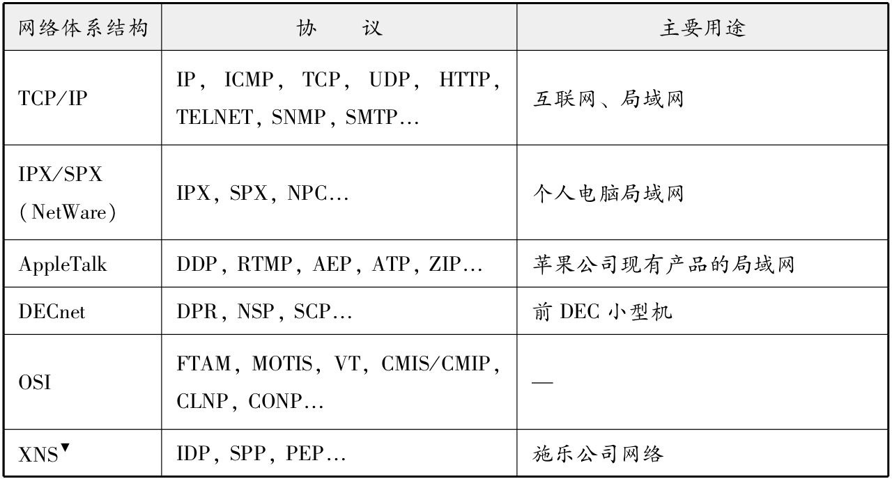
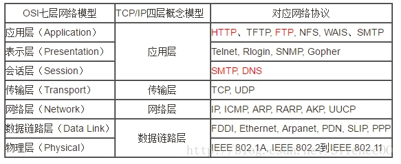

在计算机通信中，事先达成一个详细的约定，并遵循这一约定进行处理，这种约定其实就是协议。
计算机网络体系结构将网络协议进行了系统的归纳。TCP/IP就是IP、TCP、HTTP等协议的集合。除此之外，还有很多其他类型的网络体系结构。

OSI模型
开放式系统互联通信参考模型(Open System Interconnection Reference Model， 简称OSI模型)。在这一模型中，每个分层都接收由它下一层所提供的特定服务，并且负责为自己的上一层提供特定的服务。上下层之间进行交互时所遵循的约定叫做接口。统一层之间的交互所遵循的约定叫做协议。
- 分层可以将每个独立使用，即使系统中某些分层发生变化，也不会波及整个系统
- 分层能够细分通信功能，更易于单独实现每个分层的协议，并界定各个分层的具体责任和义务。

- 应⽤层：为应⽤程序提供服务并规定应⽤程序中通信相关的细节。包括⽂件传输、电⼦邮件、远程登录（虚拟终端）等协议。
- 表⽰层：将应⽤处理的信息转换为适合⽹络传输的格式，或将来⾃下⼀层的数据转换为上层能够处理的格式。因此它主要负责数据格式的转换。具体来说，就是将设备固有的数据格式转换为⽹络标准传输格式。不同设备对同⼀⽐特流解释的结果可能会不同。因此，使它们保持⼀致是这 ⼀层的主要作⽤。
- 会话层： 负责建⽴和断开通信连接（数据流动的逻辑通路），以及数据的分割等数据传输相关的管理。
- 传输层： 起着可靠传输的作⽤。只在通信双⽅节点上进⾏处理，⽽⽆需在路由器上处理。
- ⽹络层：将数据传输到⽬标地址。⽬标地址可以是多个⽹络通过路由器连接⽽成的某⼀个地址。因此这⼀层主要负责寻址和路由选择。
- 数据链路层：负责物理层⾯上互连的、节点之间的通信传输。例如与1个以太⽹相连的2个节点之间的通信。 将0、1序列划分为具有意义的数据帧传送给对端（数据帧的⽣成与接收）。
- 物理层：负责0、1⽐特流（0、1序列）与电压的⾼低、光的闪灭之间的互换。
TCP/IP协议
